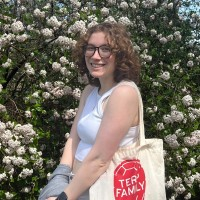

Elizabeth Alspach
Student Journalist

Experience
Managing Editor
The Diamondback
April 2023 - Present
I work with The Diamondback’s Editor-in-Chief and team of editors to check, organize and publish articles while managing everyday operations of The Diamondback. I also assist desk editors with hiring and reporting practices to better represent the members of The Diamondback’s community.
Copy Chief
The Diamondback
December 2022 - April 2023
I managed a team of copy editors, who fact-checked, style-checked and grammar-checked all stories published by The Diamondback. I also worked with managing editors to better implement practices with Spanish translations and created more resources for copy editors.
Copy Editor
The Diamondback
August 2022 - December 2022
I worked with reporters and editors to fact-check, style-check and grammar-check all of The Diamondback’s stories before publication.
Education
- Diploma, Northwood High School, 2022
Skills
- Multimedia Editing. Editing in a variety of formats, with video, photo and audio stories, as well as stories ranging in topic from politics to sports to popular culture.
- Journalism. Senior editor at two newspapers. Interest in investigative reporting and experience with sensitive, in-depth interviews.
- Excel. Formatting and sorting data for stories and data analysis.
- Photography. Takes photos for my own stories, and creates engaging visuals for feature stories.